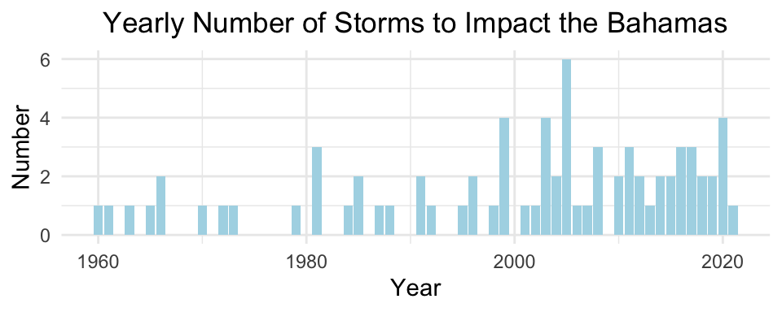
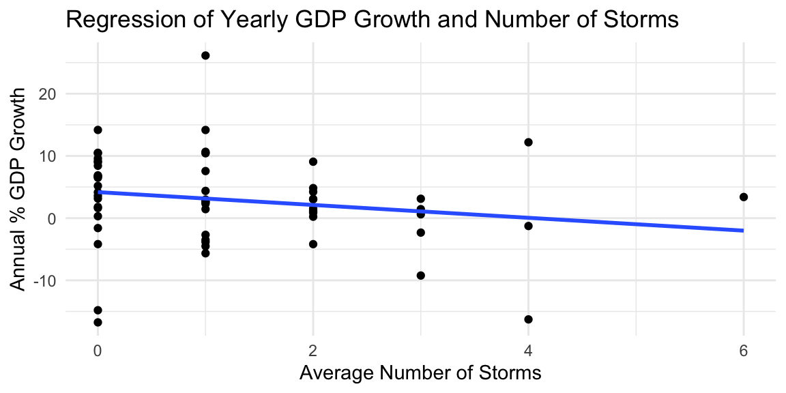
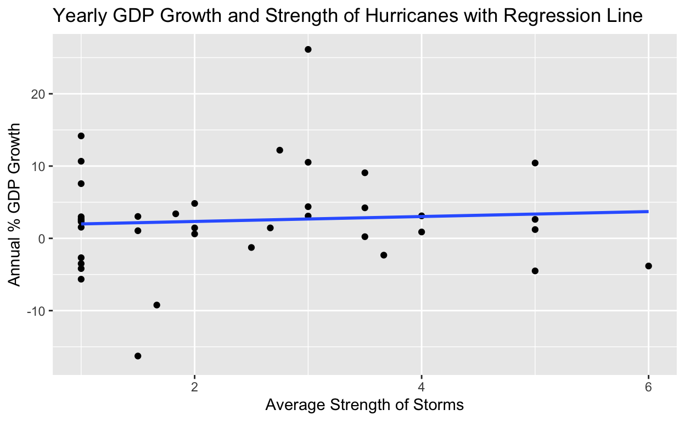

EDS 222 Final Project: Exploring the statistical relationship between Hurricanes and the Annual Percentage of GDP Growth in The Bahamas.
Motivate your question Why is this important? Is there existing evidence on this question? If so, why is it inconclusive? If not, why not?
The aim of this project is to investigate the impact of hurricanes on the annual percentage of GDP growth in The Bahamas. Growing up in The Bahamas, I have witnessed first hand the devastating impacts of hurricanes on livelihoods throughout the country and have been an active participant in recovery efforts every time my island was struck. Natural disasters have massive economic and human costs and take a deep toll on growth prospects because reconstruction costs monopolize already scarce resources for health, education, and social spending, especially in developing countries (tker & Srinivasan, 2018).
There is existing research on the impact of hurricanes on GDP growth in the United States but this project will look specifically at The Bahamas. With the global changing climate and the continual impact of stronger hurricanes on Caribbean countries, answering this question can have important implications for the future of small island developing states like The Bahamas.
Describe your data Where did you access it? What are its spatial and temporal features? What are its limitations? What do you know about the sampling strategy and what biases that may introduce? If helpful, you can use a histogram, scatterplot, or summary statistics table to describe your data
For the analysis of this research question, data from the National Hurricane Center and The World Bank are being used.
The data for annual percentage of GDP Growth was collected from The World Bank Data Repository. This data covers annual percentage of GDP growth from 1961 to present for The Bahamas. The metadata containing information about calculations and sampling strategy can be found here.
gdp_growth <- read_csv(here("_posts", "2021-11-24-hurricanes-and-gdp-growth-in-the-bahamas", "final_proj_data", "bah_yearly_gdp_growth.csv")) %>%
rename("country_name" = "Country Name") %>%
filter(country_name == "Bahamas, The") %>%
select(-"Indicator Name") %>%
pivot_longer(cols = 2:62,
names_to = "year",
values_to = "gdp_growth") %>%
mutate(year = as.numeric(year))
ggplot(data = gdp_growth, aes(x = year, y = gdp_growth)) +
geom_line(color = "lightblue") +
geom_point(color = "blue") +
labs(x = "Year",
y = "Annual % GDP Growth",
title = "Yearly Percentage of GDP Growth for The Bahamas") +
theme_classic() +
theme(plot.title = element_text(hjust = 0.5))
The data on hurricanes in The Bahamas was collected from the National Hurricane Centers Data Archive (National Hurricane Center, 2021). This dataset did not exist in csv format, so I looked through the yearly reports from 1960 to present and recorded all of the storms that impacted The Bahamas. I made note of the year each storm occurred, the name of the storm, the intensity and the number of islands in The Bahamas that were impacted by each storm.
In creation of this dataset, I recorded storm intensity from 1 to 6, with 1 being Tropical Storms and 6 being a category 5 hurricane. The Saffir-Simpson Wind Scale considers a tropical storm anything with winds below 74mph (National Hurricane Center, 2021), but I know that these storm can still have damaging impacts on countries so I wanted to ensure they were included in the data to be analyzed for this question.
storms <- read_csv(here("_posts", "2021-11-24-hurricanes-and-gdp-growth-in-the-bahamas", "final_proj_data", "bahamas_hurricanes.csv"))
yr_storms <- storms %>%
group_by(year) %>%
summarize(number = n(),
avg_strength = mean(category),
avg_numisland = mean(no_of_islands))
yr_storms_summary <- yr_storms %>%
kable(
digits = 2,
col.names = c("Year", "Number of Storms", "Average Strength", "Average Number of Islands"),
align = 'lccr',
caption = "Bahamian Hurricane Summary Statistics 1960 - 2021")
yr_storms_summary
| Year | Number of Storms | Average Strength | Average Number of Islands |
|---|---|---|---|
| 1960 | 1 | 4.00 | 3.00 |
| 1961 | 1 | 1.00 | 4.00 |
| 1963 | 1 | 3.00 | 3.00 |
| 1965 | 1 | 5.00 | 2.00 |
| 1966 | 2 | 3.50 | 3.00 |
| 1970 | 1 | 1.00 | 1.00 |
| 1972 | 1 | 1.00 | 1.00 |
| 1973 | 1 | 1.00 | 3.00 |
| 1979 | 1 | 3.00 | 1.00 |
| 1981 | 3 | 1.67 | 2.67 |
| 1984 | 1 | 1.00 | 2.00 |
| 1985 | 2 | 2.00 | 2.00 |
| 1987 | 1 | 1.00 | 3.00 |
| 1988 | 1 | 1.00 | 2.00 |
| 1991 | 2 | 1.00 | 2.50 |
| 1992 | 1 | 6.00 | 6.00 |
| 1995 | 1 | 3.00 | 4.00 |
| 1996 | 2 | 3.50 | 1.50 |
| 1998 | 1 | 5.00 | 1.00 |
| 1999 | 4 | 2.75 | 2.75 |
| 2001 | 1 | 5.00 | 2.00 |
| 2002 | 1 | 1.00 | 2.00 |
| 2003 | 4 | 2.50 | 1.75 |
| 2004 | 2 | 4.00 | 10.50 |
| 2005 | 6 | 1.83 | 2.83 |
| 2006 | 1 | 1.00 | 2.00 |
| 2007 | 1 | 2.00 | 5.00 |
| 2008 | 3 | 3.67 | 1.67 |
| 2010 | 2 | 1.00 | 3.00 |
| 2011 | 3 | 2.00 | 4.00 |
| 2012 | 2 | 3.00 | 3.50 |
| 2013 | 1 | 1.00 | 2.00 |
| 2014 | 2 | 1.50 | 2.00 |
| 2015 | 2 | 3.50 | 4.50 |
| 2016 | 3 | 2.67 | 2.67 |
| 2017 | 3 | 4.00 | 3.00 |
| 2018 | 2 | 1.50 | 2.00 |
| 2019 | 2 | 5.00 | 2.50 |
| 2020 | 4 | 1.50 | 1.50 |
| 2021 | 1 | 2.00 | 1.00 |
yearly <- ggplot(data = yr_storms, aes(x = year, y = number)) +
geom_point(color = "blue") +
labs(x = "Year",
y = "Number of Storms",
title = "Yearly Number of Storms to Impact the Bahamas") +
theme_minimal() +
theme(plot.title = element_text(hjust = 0.5))
intensity <- ggplot(data = yr_storms, aes(x = year, y = avg_strength)) +
geom_point(color = "blue") +
labs(x = "Year",
y = "Average Intensity of Storms",
title = "Average Yearly Storm Intensity") +
theme_minimal() +
theme(plot.title = element_text(hjust = 0.5))
yearly / intensity

To complete my analysis, I had to combine the GDP growth dataset with the Hurricane dataset. I also added a column to the dataset that recorded whether there was a storm in a given year and removed any years where the value for gdp_growth was NA.
Clearly describe your analysis plan What is your analysis plan? Why did you choose this analysis, given your data and question? What are the limitations?
For this analysis Im going to first look at a linear regression of the impact of yearly number hurricanes and their average strength on annual percentage of GDP growth. I will then perform hypothesis testing to evaluate if there is a difference in GDP growth between years with hurricanes versus years without.
I decided to use multiple linear regression to evaluate the relation between hurricanes and annual percentage of GDP growth because I wanted to avoid one omitted variable that can lead to bias. The stronger a hurricane, the more damage it inflicts on a location so I did not just want to look at the number of hurricanes in a given year but also how strong they are.
I decided to to use hypothesis testing to evaluate whether there was a difference in years with and without hurricanes and this further allows me to analyze the lag effect of hurricanes on annual percentage of GDP growth in The Bahamas by comparing the p-value at year 0 and then at two years later.
The biggest limitation in answering my research question is the known fact that more that the impact of hurricanes affect the annual GDP growth of The Bahamas so there is a likely chance that my results will be inconclusive because of omitted variables in GDP growth.
edit why I chose this analysis and what the limitations are
Summarize your results visually and in words Show us your results in figure(s) and/or table(s) that are carefully labeled and captioned. Describe in the text what you found, and how these results either do or do not help you answer your question.
| Estimate | Std. Error | t value | Pr(>|t|) | |
|---|---|---|---|---|
| (Intercept) | 4.457 | 2.971 | 1.500 | 0.143 |
| number | -1.465 | 0.994 | -1.474 | 0.149 |
| avg_strength | 0.346 | 0.797 | 0.434 | 0.667 |
mod <- lm(gdp_growth ~ number + avg_strength, data = hgdp)
This linear regression tells us that the annual percentage of GDP growth in The Bahamas without the impact of Hurricanes is 4.46. With an increase in number of hurricanes per year by 1, ignoring their intensity, the annual percentage of GDP Growth decreases by -1.47. When observing the impact of average strength of hurricanes on GDP growth, with an increase in 1 category of hurricane intensity, ignoring the number of storms, the annual percentage of GDP growth increases by 0.35
hgdp %>%
ggplot(aes(y = gdp_growth, x = number)) +
geom_point() +
stat_smooth(method = "lm", se = FALSE) +
labs(x = "Average Number of Storms",
y = "Annual % GDP Growth",
title = "Yearly GDP Growth and Number of Hurricanes with Regression Line")

A negative correlation between annual percentage of GDP Growth and annual mean number of storms is displayed in this graph.
hgdp %>%
ggplot(aes(y = gdp_growth, x = avg_strength)) +
geom_point() +
stat_smooth(method = "lm", se = FALSE) +
labs(x = "Average Strength of Storms",
y = "Annual % GDP Growth",
title = "Yearly GDP Growth and Strength of Hurricanes with Regression Line")

There is a slight positive correlation seen between annual percent GDP growth and the average strength of storms. This positive correlation highlights that there are likely many omitted variables in the data as well as the possibility of a lagged effect.
We can visualize the relationship between all three variables in a hyperplane.
I will construct a null and alternative hypothesis that will allow me to evaluate if there is a difference in annual GDP growth for years without storms vs years with storms.
\[H_{0}: \mu_{nostorms} - \mu_{storms} = 0\] \[H_{A}: \mu_{nostorms} - \mu_{storms} \neq 0\]
mu_nostorms <- hgdp %>%
filter(storm == "no") %>%
summarize(mean(gdp_growth))
mu_storms <- hgdp %>%
filter(storm == "yes") %>%
summarize(mean(gdp_growth, na.rm = T))
point_est = as.numeric(mu_nostorms - mu_storms)
The difference between annual GDP growth for years without a storm versus years with a storm is 1.1633097.
n1 = hgdp %>% filter(storm == "no") %>% count()
n2 = hgdp %>% filter(storm == "yes") %>% count()
s1 = hgdp %>% filter(storm == "no") %>% summarize(sd(gdp_growth, na.rm = TRUE))
s2 = hgdp %>% filter(storm == "yes") %>% summarize(sd(gdp_growth, na.rm = TRUE))
SE = as.numeric(sqrt(s1^2/n1 + s2^2/n2))
print(SE)
[1] 1.99641zscore = (point_est - 0)/SE
print(zscore)
[1] 0.5827009[1] 0.5600947Since the p-value is greater than the 0.05, we fail to reject the null hypothesis that there is no difference between annual GDP Growth for years where there is a storm versus a year without. From this sample, we cannot say with certainty that there is a statistical difference at the 5% significance level between GDP growth in years without a hurricanes and years with one.
These results are not very helpful in answering the question of impact of hurricanes on the GDP Growth in The Bahamas.
Because I failed to reject my null, I was thinking about further analysis and decided to look at whether or not there was a lagged affect due to the impact of hurricanes. Because the hurricane season is from June 1st to November 30th, if there is a late season hurricane that devastates The Bahamas, it is possible that the affect will not be seen on GDP until following years. My new hypothesis test evaluates whether there is a difference in GDP growth for years where there were hurricanes versus years with hurricanes two years before.
My new null hypothesis is \[H_{0}: \mu_{nostorms} - \mu_{storms} = 0\] where storms and no storms now represent the value from two year prior. The new alternative hypothesis is \[H_{A}: \mu_{nostorms} - \mu_{storms} \neq 0\].
mu_nostorms <- hgdp_lag %>%
filter(storm_lag == "no") %>%
summarize(mean(gdp_growth, na.rm = T))
mu_storms <- hgdp_lag %>%
filter(storm_lag == "yes") %>%
summarize(mean(gdp_growth, na.rm = T))
point_est = as.numeric(mu_nostorms - mu_storms)
The difference between annual GDP growth for years without a storm the previous year versus years with a storm the year prior is 5.7710217.
n1 = hgdp_lag %>% filter(storm_lag == "no") %>% count()
n2 = hgdp_lag %>% filter(storm_lag == "yes") %>% count()
s1 = hgdp_lag %>% filter(storm_lag == "no") %>% summarize(sd(gdp_growth, na.rm = TRUE))
s2 = hgdp_lag %>% filter(storm_lag == "yes") %>% summarize(sd(gdp_growth, na.rm = TRUE))
SE = as.numeric(sqrt(s1^2/n1 + s2^2/n2))
print(SE)
[1] 1.857529zscore = (point_est - 0)/SE
print(zscore)
[1] 3.106828[1] 0.001891066With the new p-value with the lagged effect being 0.0019 < 0.05, we can now reject the null that there is no difference in GDP growth for years with there was a storm 2 years prior versus years there was not. We can now say there is a statistical difference at the 95% confidence level in annual GDP growth percentage between years where the was a hurricane two years prior versus those with none.
Because we were able to reject the null hypothesis here, I will now contruct a confidence interval for the p-value.
crit_val = qnorm(0.025, lower.tail=FALSE)
Now we can construct the 95% confidence interval:
ci_lower = round(point_est - crit_val*SE, 2)
ci_upper = round(point_est + crit_val*SE, 2)
print(paste0("There is a 95% probability that [", ci_lower, ", ", ci_upper, "] contains the difference in annual GDP growth for years where there was a hurricane two years prior versus years where there was not."))
[1] "There is a 95% probability that [2.13, 9.41] contains the difference in annual GDP growth for years where there was a hurricane two years prior versus years where there was not."t.test(gdp_growth ~ storm_lag, data = hgdp_lag, conf.level = 0.90)
Welch Two Sample t-test
data: gdp_growth by storm_lag
t = 3.1068, df = 41.947, p-value = 0.003387
alternative hypothesis: true difference in means between group no and group yes is not equal to 0
90 percent confidence interval:
2.646659 8.895385
sample estimates:
mean in group no mean in group yes
6.2442374 0.4732157 What might you do next? One short analysis cannot fully answer an interesting scientific question. If you had time to collect more data or conduct more analysis, what would help you answer this question better?
For attribution, please cite this work as
Cartwright (2021, Nov. 24). Paloma Cartwright: Hurricanes and GDP Growth in The Bahamas. Retrieved from palomacartwright.github.io/posts/2021-11-24-hurricanes-and-gdp-growth-in-the-bahamas/
BibTeX citation
@misc{cartwright2021hurricanes,
author = {Cartwright, Paloma},
title = {Paloma Cartwright: Hurricanes and GDP Growth in The Bahamas},
url = {palomacartwright.github.io/posts/2021-11-24-hurricanes-and-gdp-growth-in-the-bahamas/},
year = {2021}
}